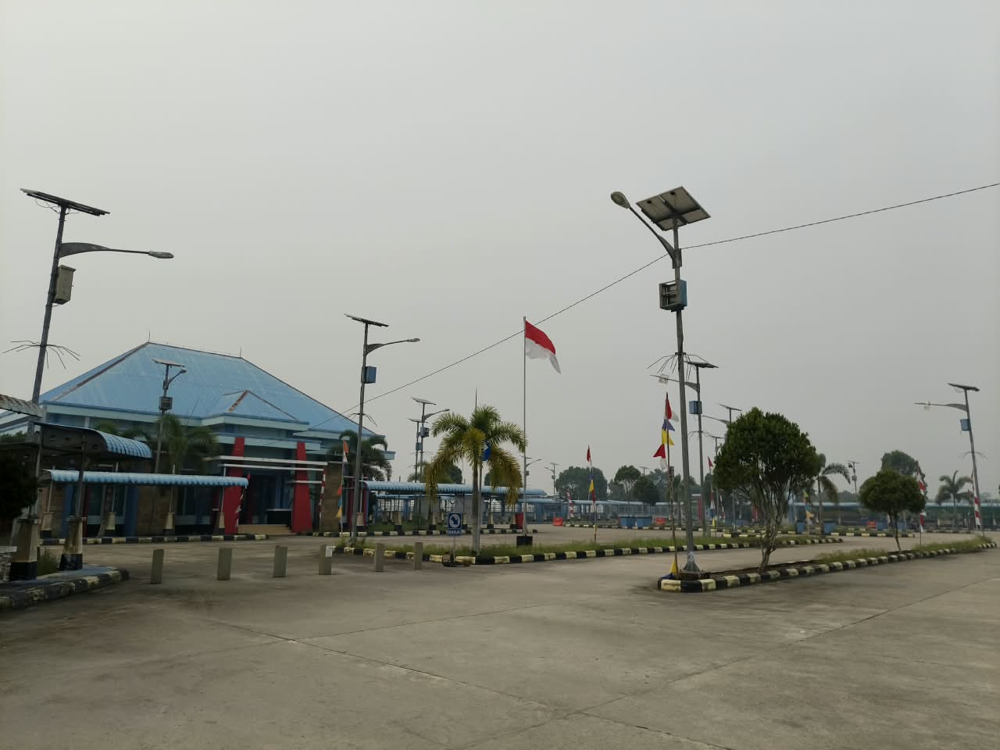
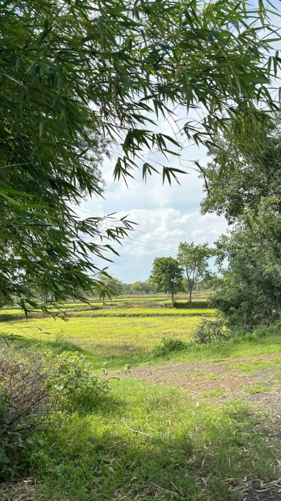
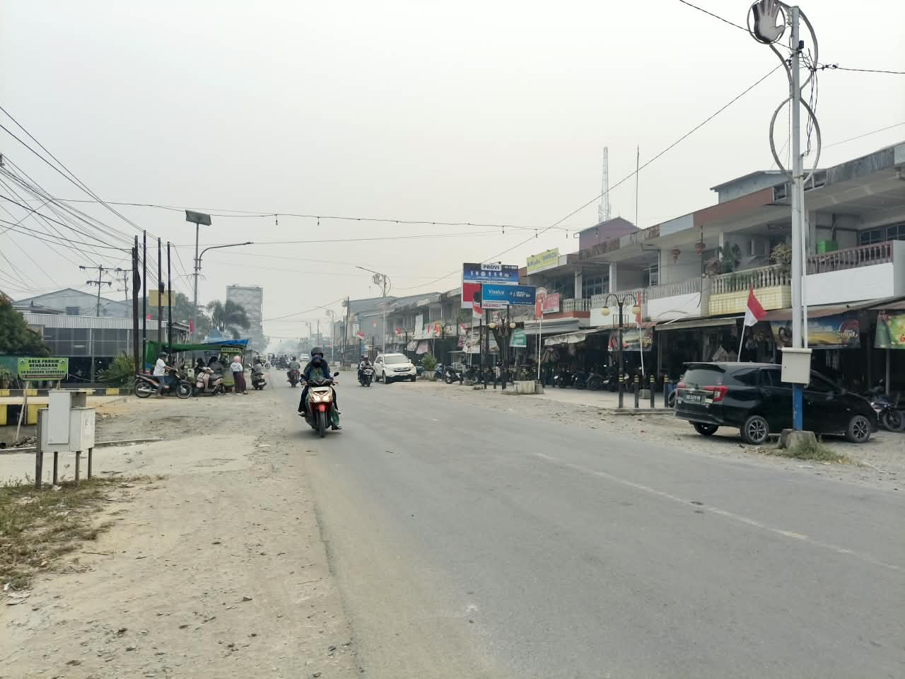
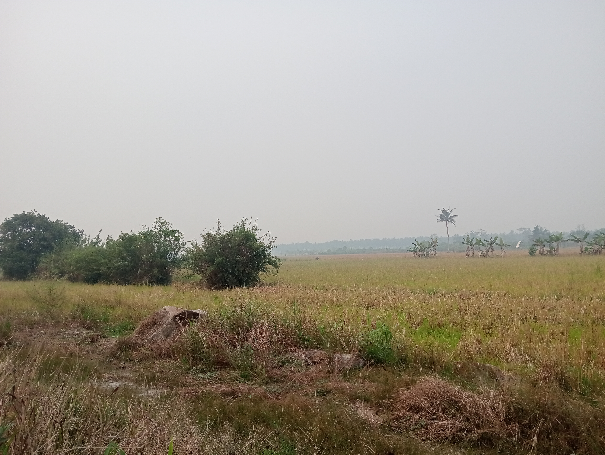
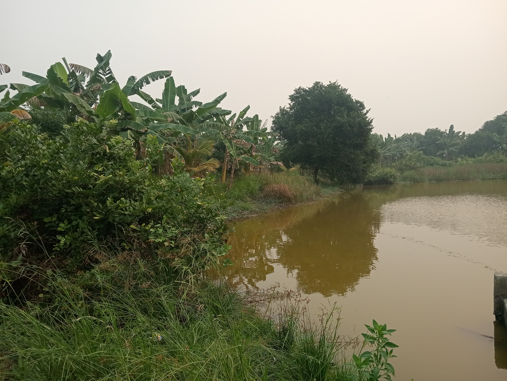

Dokumentasi
Galeri Desa
Dokumentasi kegiatan, lingkungan, dan potensi Desa Semparuk.




Dokumentasi
Kegiatan Desa
Galeri ini dapat dikembangkan untuk menampilkan dokumentasi kegiatan masyarakat.